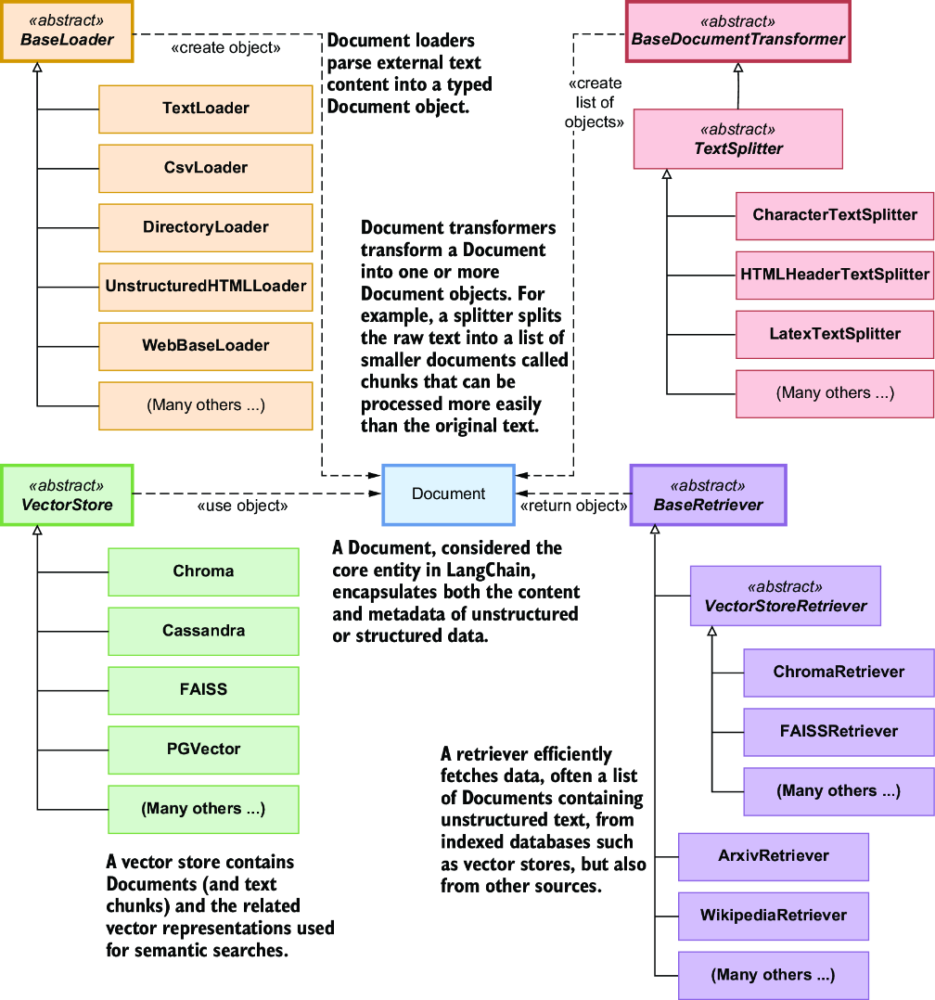
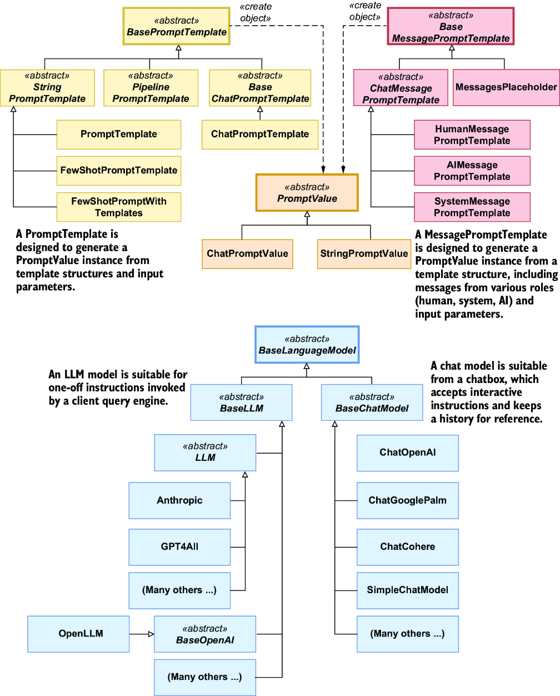
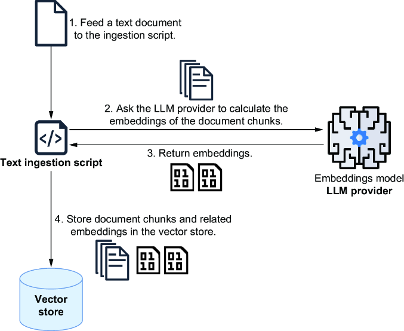

Learning outcomes
- Compare LLM architectures: engines, chatbots, and autonomous agents.
- Navigate LangChain’s core object model and its modular components.
- Select the optimal technique for grounding LLMs: Prompt Engineering, RAG, or Fine-tuning.
- Evaluate model selection based on accuracy, speed, and cost tradeoffs.
Topics
LLM fundamentals, prompt templates, chain composition, output parsing, and runtime controls.
1. Introduction
1.1 LLM Applications, Chatbots, and AI Agents
LLMs work well with natural language: they understand text, generate it, and extract useful information. This enables many applications, including summarization, translation, sentiment analysis, semantic search, chatbots, and code generation. For this reason, LLM systems are now used in sectors such as education, healthcare, law, and finance.
Even with different use cases, most LLM systems follow a similar flow: natural-language input, unstructured data processing, context retrieval, and prompt construction for model execution. In practice, these systems are grouped into three categories.
LLM-based applications, or engines, provide a bounded capability such as summarization, search, or generation. They produce an output and stop, without choosing autonomous follow-up actions.
Chatbots are conversational interfaces that keep context across turns. Their focus is dialogue and interactive Q&A.
AI agents are autonomous or semi-autonomous systems that plan and execute multi-step work toward a goal. Unlike engines, they can loop (observe -> decide -> act -> observe), use tools and APIs, and adapt based on intermediate outcomes.
1.2 LLM-based Applications
1.2.1 Summarization and Q&A engines
An LLM-based application is a backend component for specific language tasks. A summarization engine, for example, condenses long text into concise output that can be returned immediately or stored for reuse.

Summarization engines are often exposed as shared API services so multiple systems can call them on demand. Another common pattern is the Q&A engine, which answers queries against a domain knowledge base through two phases: ingestion and query.
In ingestion, the engine collects documents, splits them into chunks, converts chunks into embeddings, and stores text plus vectors in a vector store. In query, it embeds the user question, retrieves relevant chunks, and builds a prompt with question and context before calling the LLM.
This design is Retrieval-Augmented Generation (RAG), where generation is grounded by retrieved context at runtime.

Engines are not limited to Q&A. They can run predefined chains with API calls, data retrieval, and post-processing. The key property remains the same: a bounded, goal-specific workflow with logic defined before runtime.
1.2.2 LLM-based chatbots
An LLM-based chatbot acts as an interactive assistant that supports continuous, natural conversation with the model. Unlike simple one-shot scripts, chatbots are designed to keep exchanges useful, safe, and consistent through explicit prompt instructions and role-based messages.
To improve factual quality, chatbots often retrieve context from local knowledge sources such as vector stores. This combination of dialogue and retrieval helps produce answers that are not only fluent, but also more relevant to the domain.
A key capability is conversation memory: by using previous turns, the chatbot can keep answers coherent and personalized. Because memory is constrained by context limits and cost, many systems summarize or compress chat history during longer interactions.
Chatbots are often specialized for tasks such as summarization, Q&A, and translation. The main difference from engines is interactivity: users can refine outputs step by step, and the system adapts responses through iterative dialogue.


1.2.3 AI agents
An AI agent is a system that uses an LLM to execute multi-step tasks with branching logic and adaptive decisions. Unlike fixed pipelines, agents operate with controlled autonomy: they follow constraints, but they decide what to do next at runtime.
At each step, the agent asks the model to select tools, executes those tools, evaluates intermediate results, and continues until a stopping condition is reached. This loop lets agents combine structured and unstructured data sources in a single workflow.
A typical pattern is goal-oriented orchestration: the agent receives a user request, chooses relevant services, runs queries or API calls, and then composes a final response from the collected outputs.

Interest in agents has grown further with Model Context Protocol (MCP), which gives services a standard way to expose tools through MCP servers that agents can access through MCP clients. This shifts integration work toward the service layer and reduces the need for custom connectors in each agent application.
In production settings, this loop may run for multiple iterations and often includes human approval for high-stakes actions. Agent architectures can also vary, including supervisor patterns that coordinate more specialized sub-agents.
2. Introducing LangChain
2.1 The Need for a Framework
Building LLM applications often leads to repetitive "plumbing" tasks: loading data, splitting text, generating embeddings, and managing prompts. Without a framework, developers end up writing fragile "glue code" that is hard to maintain and scale. LangChain addresses these challenges by providing modular building blocks that standardize how data is ingested, processed, and retrieved.
Three core principles guide its design: modularity (swappable components), composability (building chains and workflows), and extensibility (easy integration with third-party tools). By using LangChain, you focus on application logic rather than low-level wiring, ensuring that prompts, chains, and integrations remain maintainable as your project grows.
2.2 LangChain Architecture
Most LangChain workflows follow a consistent pattern for bringing proprietary data to the model. It starts by pulling text from sources—like files or databases—into Document objects, which are then split into smaller chunks. These chunks are converted into embeddings (vector representations of meaning) and stored in a vector store for efficient retrieval.

At query time, only the most relevant chunks are retrieved based on similarity search, allowing the LLM to answer questions without overstuffing the prompt with entire documents. This architecture balances context limits and costs while preserving answer quality.
2.3 Core Object Model
LangChain is organized around specific class families that represent the building blocks of an LLM application. The Document entity is central, supported by DocumentLoaders (to ingest data), TextSplitters (to chunk it), and VectorStores/Retrievers (to index and pull relevant text).

Beyond documents, the framework provides abstractions for LLM interactions, such as PromptTemplates and PromptValues. A key architectural feature is the Runnable interface, which allows these components to be composed and chained together consistently, enabling modular and traceable workflows.

3. Typical LLM Use Cases
LLMs are applied across a wide range of tasks, from text classification to code generation and logical reasoning. In practice, these models act as versatile engines that can be adapted to various business needs.
- Text classification and sentiment analysis: Categorizing content or support tickets based on intent and tone.
- Natural language understanding and generation: Identifying main topics and creating tailored summaries.
- Semantic search: Querying knowledge bases based on intent rather than simple keywords.
- Autonomous reasoning: Planning and managing multi-step processes, such as assembling complex holiday packages.
- Structured data extraction: Pulling entities and relationships from unstructured text like financial reports.
- Code understanding and generation: Analyzing codebases, suggesting improvements, and generating new components.
4. Adapting LLMs to Your Needs
Real-world tasks often involve specific domains or scenarios that extend beyond the initial training of the LLM. Several techniques can ensure that a model meets user needs effectively, ranging from simple prompt adjustments to more complex model training.
4.1 Prompt engineering
Prompt engineering is the practice of designing inputs—from single commands to complex blocks of instructions—so the model produces useful and accurate responses. Through in-context learning and few-shot prompting, developers can guide the model's behavior and adapt it to domain-specific needs without needing extra training data. This lightweight yet effective approach is often sufficient for many applications, including maintaining conversation context in chatbots.
4.2 Retrieval-Augmented Generation (RAG)
One of the most effective ways to improve model responses is to ground them in your own data using RAG. Instead of relying only on pretrained knowledge, RAG retrieves relevant context from a local knowledge base—usually stored in a vector database—and adds it to the prompt. This workflow keeps inputs concise, reduces token costs, and significantly lowers the risk of hallucinations by ensuring that generated answers are based on verified facts.

4.3 Fine-tuning
Fine-tuning adapts a pretrained model to perform better in a specific task or domain by training it on a curated dataset of examples. This process improves efficiency because the model "knows" how to respond in a particular context without needing long instructions in every prompt. However, preparing high-quality datasets takes time and hardware resources, and in many cases, RAG outperforms fine-tuning for dynamic or less popular knowledge.
Recent advances such as Low-Rank Adaptation (LoRA) and other parameter-efficient fine-tuning methods have lowered both cost and complexity, making fine-tuning more accessible. Related techniques, such as instruction tuning and Reinforcement Learning from Human Feedback (RLHF), push models to follow directions more reliably, though they typically demand more engineering effort and infrastructure.
Whether fine-tuning is truly necessary is an ongoing debate. General-purpose LLMs are surprisingly strong out of the box, especially when paired with RAG. In fact, research shows that RAG often outperforms fine-tuning by letting you provide context dynamically at runtime, reducing both costs and retraining needs (see the research by Soudani et al. in the references).
5. Selecting the Right LLM
When developing LLM-based applications, choosing the right model involves balancing performance, speed, and cost. Modern models come in various sizes and types, accessible through proprietary APIs or as open-source projects that can be self-hosted.
5.1 Core Tradeoffs
The selection process is generally guided by three primary factors: Accuracy, Speed, and Cost. Larger models typically offer higher accuracy but respond more slowly and carry a higher per-token cost. Conversely, smaller models favor low latency and affordability at the expense of performance on complex reasoning tasks.
5.2 Technical Considerations
Beyond the core tradeoffs, developers must evaluate specific requirements such as the context window size, which determines how much data the model can process at once. Other factors include multilingual support and whether the task requires a standard instruction model for following steps or a reasoning model designed for complex problem-solving.
5.3 Multi-model Strategies
An effective production strategy often involves using different models for different tasks within the same workflow. For example, a system might use a small, fast model for initial query routing or simple summarization, and reserve a larger, more capable model for final answer synthesis. This approach optimizes the overall system for accuracy, speed, and cost simultaneously.
Further reading
- Heydar Soudani, Evangelos Kanoulas, and Faegheh Hasibi. "Fine-Tuning vs. RAG for Less Popular Knowledge" (2024). https://arxiv.org/abs/2403.01432
Guided lab
Execution steps
Explore hands-on examples by running the 01-langchain_examples_ollama.ipynb notebook. This lab guides you through building a mini assistant that classifies user intent and routes to different prompt templates using deterministic settings.
Access the materials here: Jupyter Notebook - Module 1
Key takeaways
- Diverse LLM Architectures: Understand the shift from task-specific engines and interactive chatbots to autonomous agents that use tools and multi-step reasoning.
- Framework Efficiency: Use LangChain to standardize the "plumbing" of LLM apps—document loading, chunking, and vector storage—ensuring maintainable and scalable code.
- Strategic Adaptation: Choose the right method to ground your model: use Prompt Engineering for style, RAG for proprietary data and factual accuracy, or Fine-tuning for specialized domain expertise.
- Optimized Model Selection: Balance the "accuracy-speed-cost" triangle by selecting models based on task complexity, often using multi-model pipelines for maximum efficiency.
- RAG over Fine-tuning: For most production needs, Retrieval-Augmented Generation provides a more dynamic, cost-effective, and transparent way to provide context than model retraining.